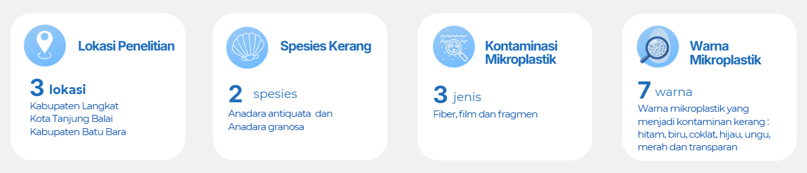
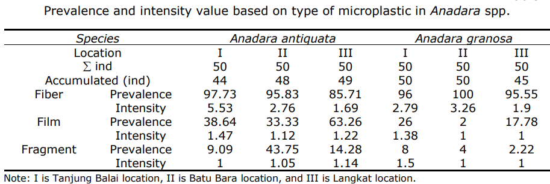
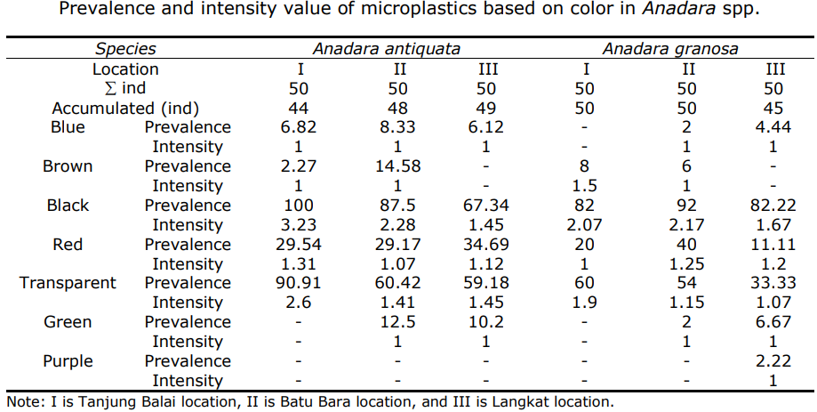

Mikroplastik pada Kerang (Anadara spp.) Pesisir Timur Sumatera Utara (2024)
Highlight Penelitian
Penelitian ini mengungkap bahwa dua spesies kerang konsumsi, yaitu Anadara antiquata dan Anadara granosa, telah terkontaminasi mikroplastik di seluruh lokasi penelitian di pesisir timur Sumatera Utara. Sebagai organisme penyaring (filter feeder), kerang mampu mengakumulasi partikel mikroplastik yang berada di kolom air sehingga menjadi bioindikator yang baik untuk menilai kualitas lingkungan perairan. Hasil penelitian menunjukkan bahwa fiber merupakan jenis mikroplastik yang paling dominan, dengan prevalensi mencapai 90–100% pada sebagian besar sampel. Temuan ini menunjukkan bahwa pencemaran mikroplastik telah meluas di kawasan pesisir.

Hasil & Visualisasi Data

Akumulasi dan persebaran jenis mikroplastik pada jaringan kerang Anadara spp. di pesisir timur Sumatera Utara.

Persentase kelimpahan dan prevalensi mikroplastik berdasarkan stasiun pengambilan sampel.